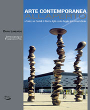

L’ARTE CONTEMPORANEA ALL’APERTO a Torino, nei castelli di Rivoli e Aglié e nella Reggia della Venarla Reale. (Introduzione di Francesco Poli)

Dopo La Città delle statue, con questo volume Dario Lanzardo esplora l’altra faccia dell’arte pubblica della città di Torino e dell’area metropolitana: quella recente e in continua evoluzione degli interventi di scultura contemporanea. Il suo viaggio fotografico disegna una mappa dei luoghi in cui sono insediate le opere mostrando ad un tempo, sia l’inscindibile nesso fra oggetto artistico e spazio circostante, che la vocazione della fotografia a interpretare esteticamente l’arte pubblica candidandosi, a volte, ad essere vista, essa stessa, come opera d’arte. Nel suo saggio introduttivo Lanzardo racconta l’evoluzione della sua ricerca fotografica sul tema del DOPPIO (statue, armature, bambole, manichini, spaventapasseri, robot, antropomorfismi casuali e naturali) che lo ha portato ad interessarsi di arte contemporanea.
Editore: Blu Edizioni
Anno: 2008